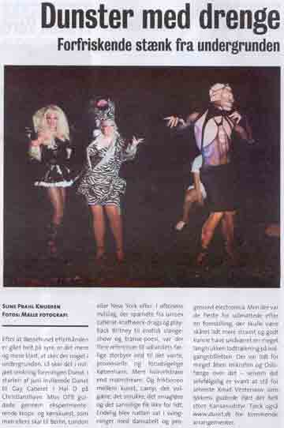
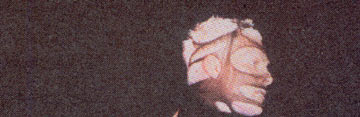
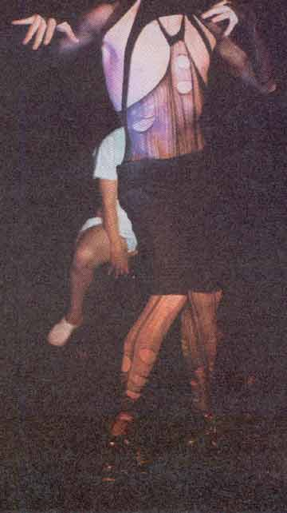

| August 2002 |
 |
| På billedet ovenfor ses O.T.B., Scarletta Jackson og Johnny Warehouse |
| Tekst: | Sune Prahl Knudsen |
| Fotos: | Malle Fotografi |
Efter at Bøssehuset efterhånden er gået helt på syre, er det mere og mere klart, at sker der noget i undergrunden, så sker det i miljøet omkring foreningen dunst.
I starten af juni inviterede dunst til Gay Night Cabaret i Hal D på Christianshavn. Miss OTB guidede gennem eksperimentedende krops- og kønskunst, som man ellers skal til Berlin, London eller New York efter. I aftenens indslag, der spændte fra unisex caberet-kraftwerk-drags og play-back Britney til erotisk slangeshow og transe-poesi, var der flere referencer til udlandets farlige storbyer end til det vante, provinsielle og forudsigelige København. Mere hvirvelstrøm end mainstream. Og friktionen mellem kunst, camp, det vulgære, det smukke, det smagløse og det sanselige fik ikke for lidt.
Endelig blev natten sat i svingninger med dansabelt og progressivt electronica. Men der var de fleste for udmattede efter en forestilling, der skulle være skåret lidt mere stramt og godt kunne have undværet en meget langtrukken kodtrækninge på indgangsbilletten. Der var lidt for meget åben mikrofon og Oslofærge over det - selvom det selvfølgeligt er svært at stå for selveste Knud Vesterskov som lykkens gudinde iført det helt store Kansasudstyr. Tjek også www.dunst.dk for kommende arrangementer.
| Johnny Warehouse |
 |
 |
Print denne side